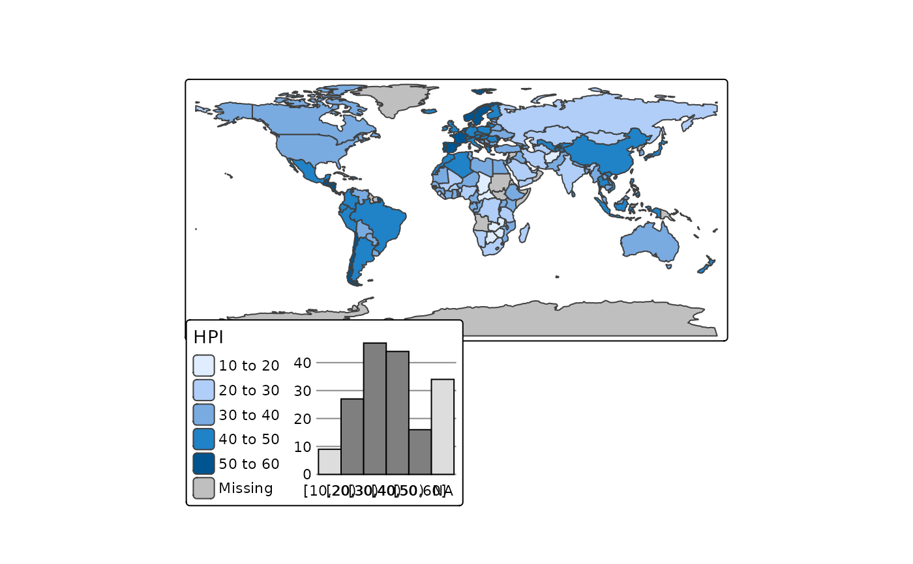
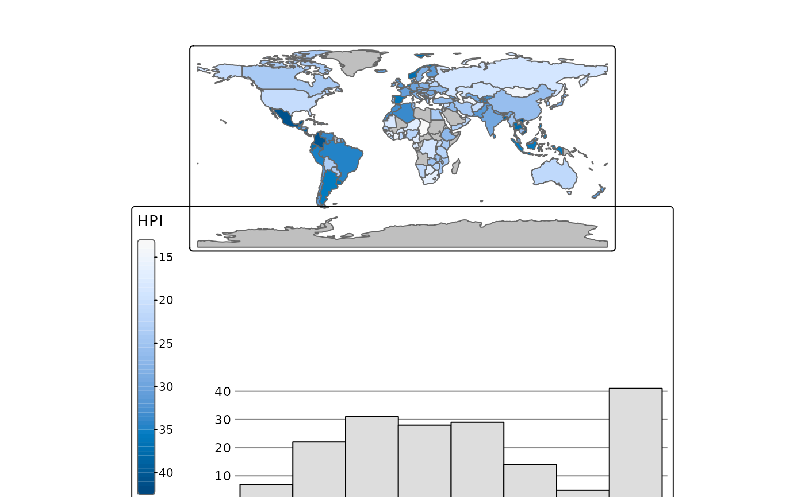
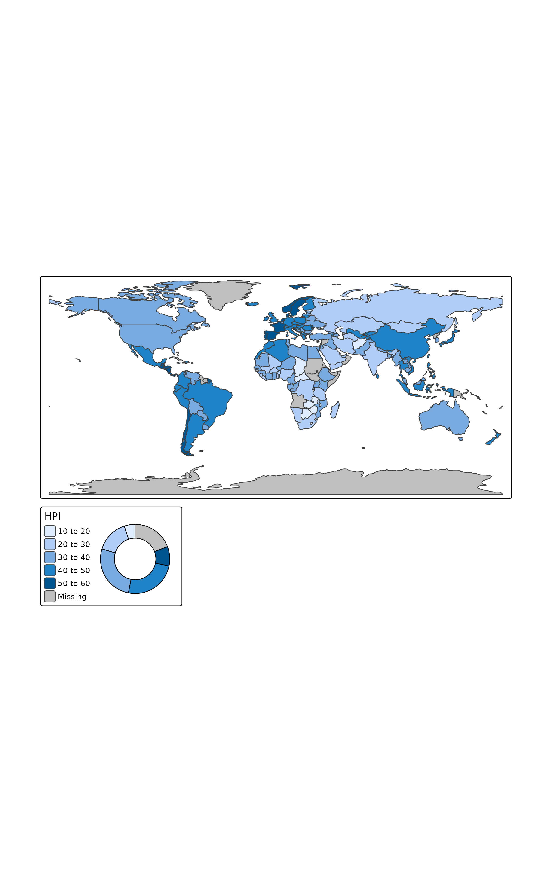
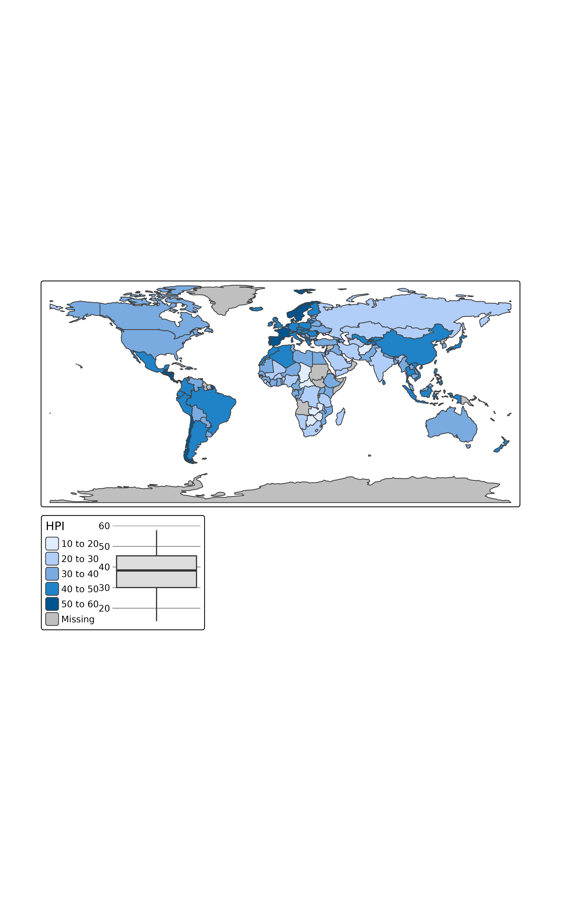
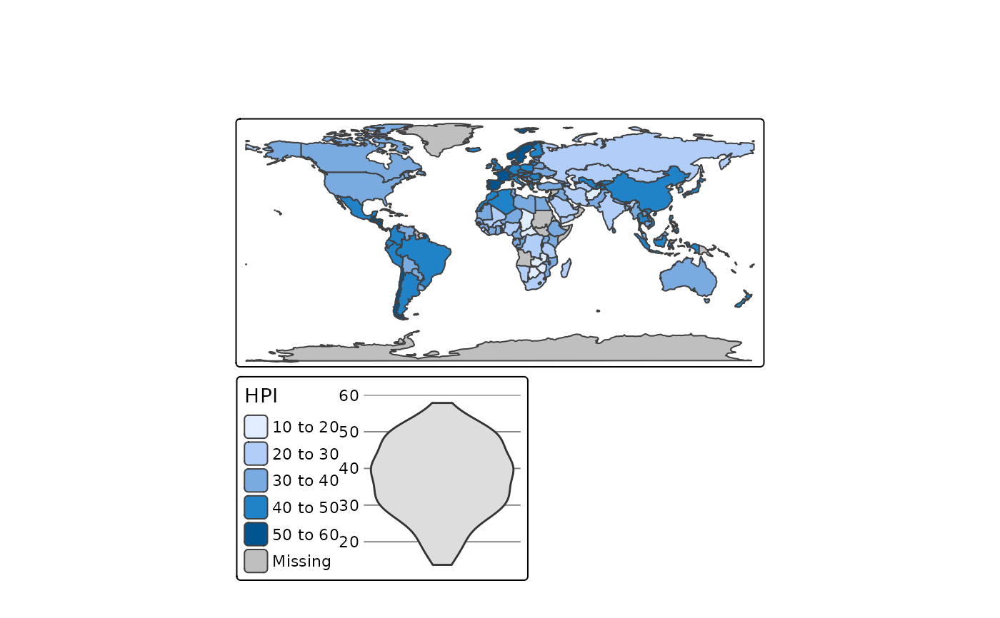
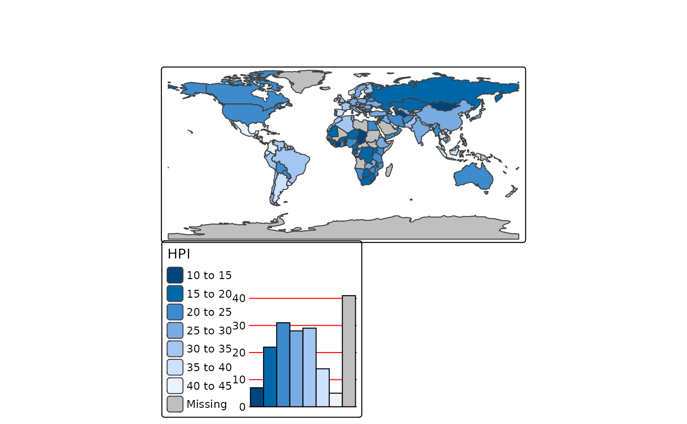
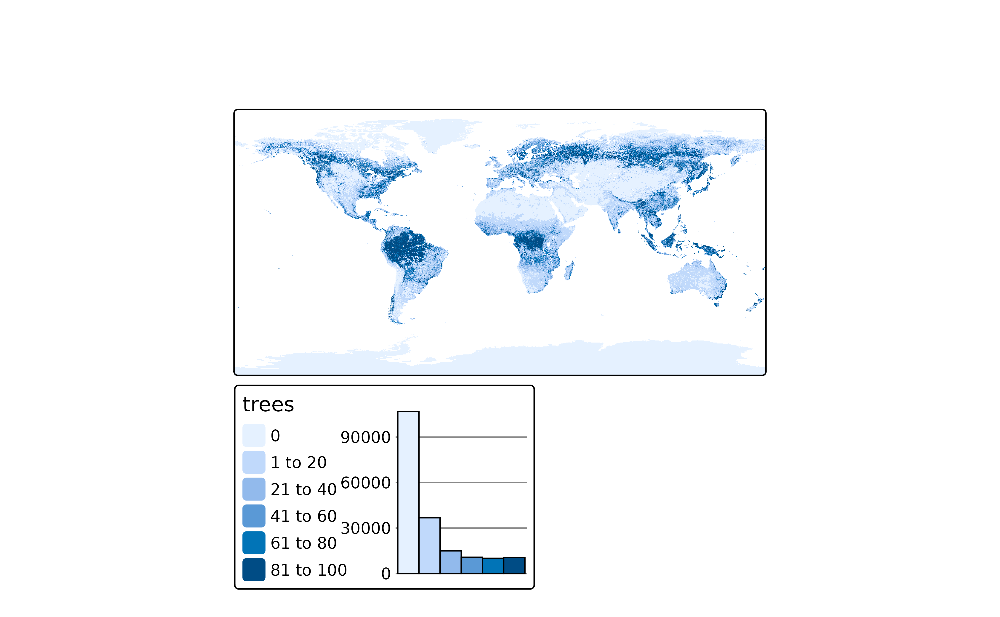
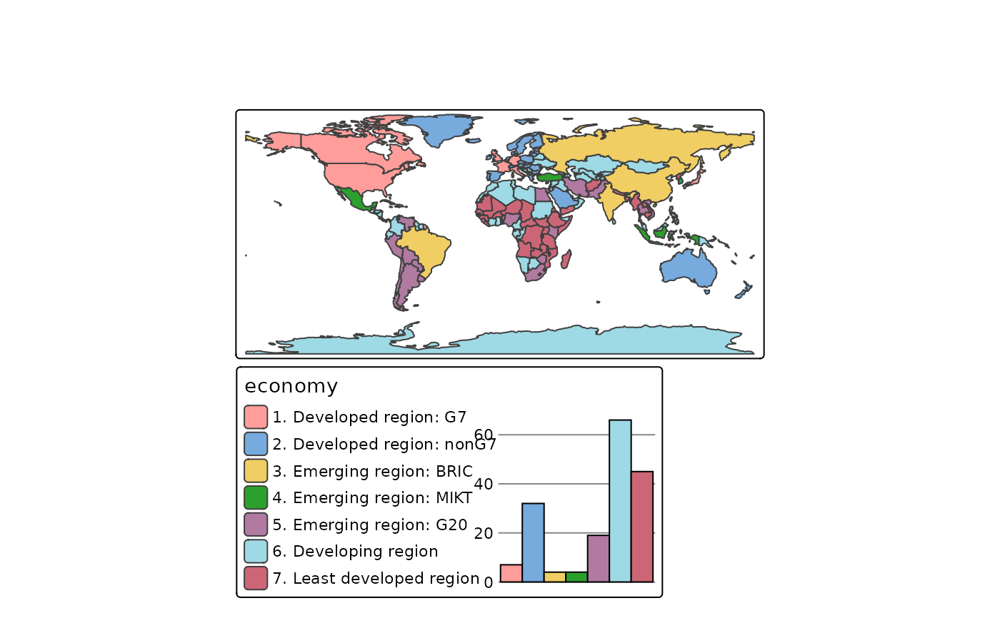
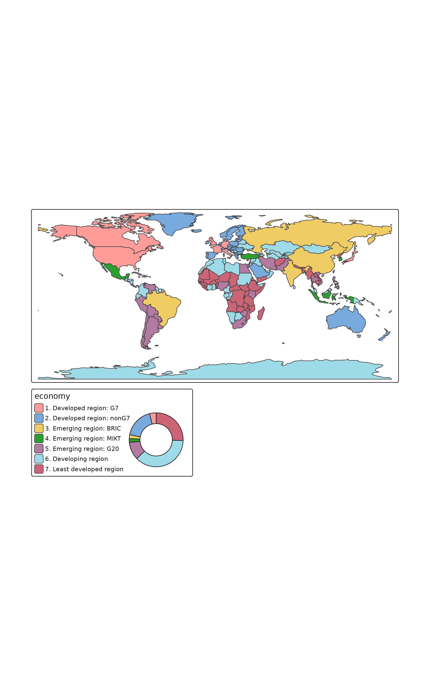
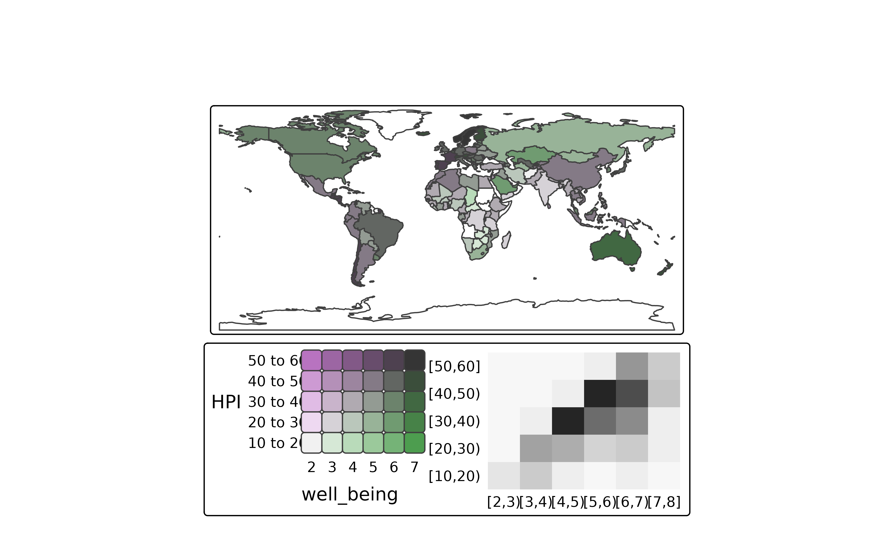

Legend charts are small charts that are added to the map, usually in addition to legends.
Usage
tm_chart_histogram(
breaks,
plot.axis.x,
plot.axis.y,
extra.ggplot2,
position,
width,
height,
stack,
z,
group.frame,
resize_as_group
)
tm_chart_bar(
plot.axis.x,
plot.axis.y,
extra.ggplot2,
position,
width,
height,
stack,
z,
group.frame,
resize_as_group
)
tm_chart_donut(position, width, height, stack, z, group.frame, resize_as_group)
tm_chart_violin(
position,
width,
height,
stack,
z,
group.frame,
resize_as_group
)
tm_chart_box(position, width, height, stack, z, group.frame, resize_as_group)
tm_chart_none()
tm_chart_heatmap(
position,
width,
height,
stack,
z,
group.frame,
resize_as_group
)Arguments
- breaks
The breaks of the bins (for histograms)
- plot.axis.x, plot.axis.y
Should the x axis and y axis be plot?
- extra.ggplot2
Extra ggplot2 code
- position
Position of the chart. See
tm_pos()for details- width
in number of text lines (height of it)
- height
in number of text lines
- stack
stack with other map components?
- z
stacking order
- group.frame
group.frame
- resize_as_group
resize_as_group
Details
Note that these charts are different from charts drawn inside the map. Those are called glyphs (to be implemented).
Examples
## numerical variable
tm_shape(World) +
tm_polygons("HPI",
fill.scale = tm_scale_intervals(),
fill.chart = tm_chart_histogram())

tm_shape(World) +
tm_polygons("HPI",
fill.scale = tm_scale_continuous(),
fill.chart = tm_chart_histogram(
position = tm_pos_out("center", "bottom"),
width = 30)
)

tm_shape(World) +
tm_polygons("HPI",
fill.scale = tm_scale_intervals(),
fill.chart = tm_chart_donut())

tm_shape(World) +
tm_polygons("HPI",
fill.scale = tm_scale_intervals(),
fill.chart = tm_chart_box())

tm_shape(World) +
tm_polygons("HPI",
fill.scale = tm_scale_intervals(),
fill.chart = tm_chart_violin())

# with additional ggplot2 code
require(ggplot2)
#> Loading required package: ggplot2
tm_shape(World) +
tm_polygons("HPI",
fill.scale = tm_scale_intervals(),
fill.chart = tm_chart_bar(
extra.ggplot2 = theme(
panel.grid.major.y = element_line(colour = "red")
))
)

tm_shape(land) +
tm_raster("trees",
col.chart = tm_chart_histogram())

## categorical variable
tm_shape(World) +
tm_polygons("economy",
fill.scale = tm_scale_categorical(),
fill.chart = tm_chart_bar())

tm_shape(World) +
tm_polygons("economy",
fill.scale = tm_scale_categorical(),
fill.chart = tm_chart_donut())

tm_shape(World) +
tm_polygons(tm_vars(c("HPI", "well_being"), multivariate = TRUE),
fill.chart = tm_chart_heatmap())
#> Labels abbreviated by the first letters, e.g.: "2 to 3" => "2"
